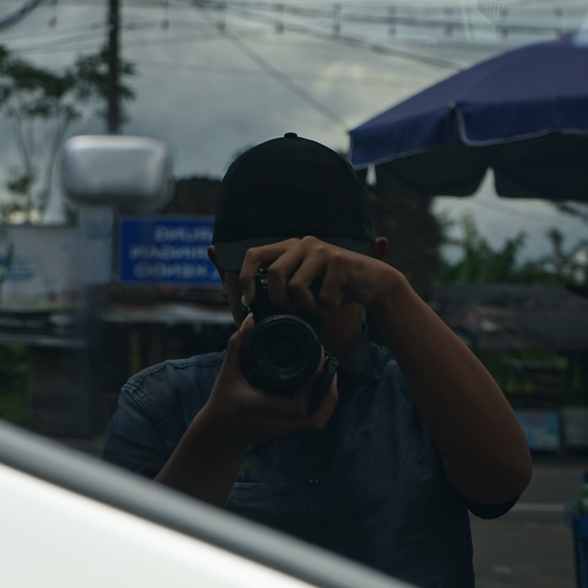

Evan Andhika Fitrianto
Mahasiswa Manajemen Informasi Komunikasi
STMM | Semester 3
Tentang Saya
Halo! Saya adalah mahasiswa semester 3 Program Studi Manajemen Informasi Komunikasi di STMM. Saat ini saya sedang mempelajari berbagai hal mengenai teknologi informasi, pengelolaan informasi, dan perkembangan teknologi digital.
Pendidikan
Program Studi: Manajemen Informasi Komunikasi
Jurusan: Komunikasi Informasi Publik
Status: Mahasiswa Aktif Semester 3
Minat dan Hobi
Beberapa hal yang saya sukai dan menjadi bagian dari aktivitas serta ketertarikan saya di waktu luang.
BisMania
Bus EnthusiastMemiliki ketertarikan terhadap dunia bus, mulai dari armada, desain, hingga perkembangan transportasi bus.
Diecaster
Miniature CollectorMenyukai miniatur kendaraan die-cast, mulai dari desain, detail model, hingga aktivitas mengoleksinya.
Channa Keeper
Fish KeepingMemiliki ketertarikan dalam memelihara ikan Channa, memperhatikan karakteristik dan keindahannya, serta menjaga perawatannya.